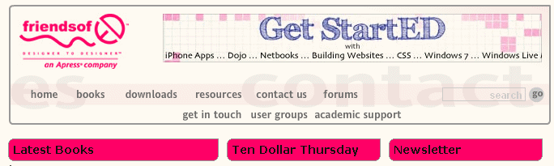

즐겨찾기 사이트
지닌 마이어(Jeanine Meyer)의 교수 활동
에서는 저의 현재/과거의 강의 요목, 발표물, 기타 활동 내역을 보실 수 있습니다.
Stolen Chair Theatre Company
는 뉴욕 공연을 주로 하는 연극단의 웹 사이트입니다. 아래 사진은 이 극단의 2010년 여름 공연 홍보 엽서입니다.
friends of ED
는 이 책의 출판사 웹 사이트입니다.
